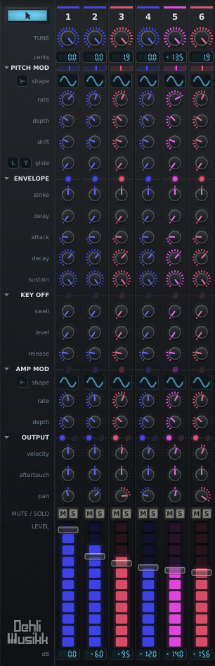

Overtonium / Controls
Overtonium controls
Thirty-two channel strips, a noise channel, and a bar of global controls across the top. Every strip has the same twenty-three controls. That is seven hundred and thirty-six of them before the bar is counted, so much of the design is about not having to move them one at a time.
This page covers the mixer. The bar across the top, from the oscillator character to the output stage, is covered on Effects. Playing the instrument from a keyboard, a host or a controller is covered on Playing.
A channel strip

| Control | Range | What it does |
|---|---|---|
| TUNE | equal to just | Where this partial sits between the tempered position and the exact ratio. The readout shows the resulting cent offset. On the six octave channels both tunings agree, so the knob has nothing to move and the readout stays at 0.0 |
| PITCH MOD shape, rate, depth | Eight shapes, 0.01 to 30 Hz, 0 to 1200 cents | Per-partial vibrato |
| DRIFT | 0 to 25 cents | Smooth random pitch wander, its own stream per partial |
| GLIDE | Off to 5 s | How long this partial takes to reach a new note, so the partials can arrive one at a time. The L and T switches beside the caption, and the knob's right-click menu, set whether it glides always or only legato, and at a fixed rate or in a fixed time. See Glide |
| ENVELOPE strike, delay, A, D, S | -100 to +100%, 0 to 5 s, 90° then 0.2 ms to 5 s, 1 ms to 20 s, 0 to 100% | Exponential decay. The harder the key is struck, the sooner and faster STRIKE starts the partial |
| KEY OFF swell, level, release | 0 to 5 s, 0 to 100%, 1 ms to 20 s | A second envelope that runs when the key is released |
| AMP MOD shape, rate, depth | Seven shapes, 0.01 to 30 Hz, 0 to 100% | Per-partial tremolo |
| VELOCITY | -100 to +100% | How much key velocity scales this partial. Negative inverts it |
| AFTERTOUCH | -100 to +100% | How much key pressure moves this partial. Negative fades it out |
| PAN | hard left to hard right | Equal power, so the level stays the same as the partial moves across the stereo field |
| M and S | Mute overrides solo. Right-click either one to clear every mute or every solo at once | |
| LEVEL | -inf to 0 dB | Fader scaled in decibels, with the meter inside its track |
What the modulators trace
Both per-partial modulators have a shape as well as a rate and a depth. You pick the shape from a small drawing of the wave between the two knobs. Click it to see the list by name. Pitch has eight shapes and amplitude has seven. Each channel has its own, the noise channel included, so the fifth partial can switch on and off while the fourth swells smoothly.
| Shape | What it does |
|---|---|
| Sine | The default |
| Triangle | The same range at an even speed, which sounds more mechanical than a sine |
| Sawtooth, Reverse Sawtooth | A ramp and a sudden jump back, in either direction |
| Square | Two values and nothing in between. On pitch it is a trill. It comes in a bipolar form, which goes the same distance above and below the note, and a unipolar form, which only goes up |
| Sample & Hold | A new random value each cycle, held until the next. On pitch, with the depth at full, it plays random notes anywhere within an octave above or below |
| Random | The same random values, moving smoothly between them instead of in steps. It is the contour DRIFT follows, at a rate you set |
Amplitude has only one square. A tremolo only ever lowers the level set by the fader, so a unipolar shape has no second direction to go in. The one square switches across the whole depth. For the same reason, every amplitude shape starts a quarter of a cycle ahead. A note begins at full level and then dips, instead of starting half attenuated.
The square and stepped shapes do not click. A partial's gain changes smoothly across each control block instead of jumping, so each edge takes about two thirds of a millisecond. That is short enough to sound like an edge and long enough not to be heard as a click.
LINK does not change the shapes. It moves a value across the series along a weighted curve, and a list of named shapes cannot be weighted. Instead, the shape menu can set every channel at once.
Shared by all notes is the other entry in that menu, one for each of the two modulators. It is also the switch beside each SHAPE caption on the left of the mixer, marked with three strokes joining into one. By default each note has its own modulator. Play a chord one note at a time and you get three tremolos, each starting when its own key went down, so they move out of step. With the entry ticked, the modulator belongs to the channel instead. A note that arrives late joins the modulation already running, so the chord moves as one however it was played. An instrument with a single tremolo circuit behaves like this, which is why Wurli ships with its tremolo shared and StyloPoly with its vibrato.
Each channel keeps its own rate and shape either way. Sharing gives one modulator per channel, not one for the whole instrument, so a patch built on thirty-two rates that never line up still sounds the same with the switch on. The switch is part of the patch, so a preset saves it. Both switches are off unless a patch turns them on.
The switch lights when its modulator is shared, so a preset with a shared tremolo shows it on the panel as well as in the menu. There is one switch per modulator, and it applies to all thirty-three channels.
Velocity and pressure, per partial
Because velocity is set per partial, a soft note can have a different timbre, not just a lower level. Set the fundamental to 0% and the upper partials to 100%, and the tone gets brighter as you play harder. A struck string or bar behaves roughly like this.
Both controls go either side of zero. A positive amount makes harder or heavier playing louder. A negative amount inverts that, so the partial is loudest when you play softly. The two halves mirror each other exactly, so -50% at a given velocity matches +50% at the opposite velocity. The negative half is useful for crossfading. Give one set of partials a positive amount and another set a negative one, and the two timbres swap places across the velocity range instead of one just fading in.
Aftertouch works the same way but adds to the fader instead of scaling it, and it ignores velocity. A strip with its fader all the way down is silent until you press into the key, and then it fades in. A negative amount fades an open strip out instead. Both channel pressure and polyphonic aftertouch are accepted, and the higher of the two is used. Pressure is smoothed over about 15 ms, so the steps of seven-bit MIDI are not heard in the gain.
By default the mod wheel also works as aftertouch, because most keyboards have no aftertouch and the wheel is close to hand. A wheel left at rest reads zero, so nothing changes on a controller that does send pressure. To use only one or the other, choose it in the "Aftertouch from" entry in Settings.
The two-part envelope
Delay, attack, decay and sustain while the key is down. Releasing the key runs a small envelope of its own instead of just fading out. The KEY OFF rows set the level the sound moves to when the key is released, and how long it takes to get there. Only then does the release run from that level down to silence.
A key-off level above the sustain gives a release click or swell, like the sound of a damper landing or a hammer returning, and it can be louder than the held note. Drawbar Organ uses it this way: the upper drawbars jump to 55% for two milliseconds as the contacts break. A level below the sustain gives the fast drop into a long tail that a piano or a struck bell has, which is probably the more common use. A key-off level of zero skips the stage and releases from the current level.
How fast you release the key scales that tail, on a keyboard that can sense release velocity. The fastest release doubles the level, the slowest halves it, and 64 leaves it unchanged. It scales the level the tail starts from. On a patch with its own key-off level it changes that level, and on a patch without one it changes the sustain. It has no knob and no parameter, because like velocity it belongs to how you play, not to the patch. A fast release cannot raise a partial that is already at full level, since the envelope stops at full scale.
Most keyboards cannot sense release velocity, and on those nothing changes. They send either a note-off with a velocity of zero or a note-on with a velocity of zero in its place. Both are read as no information, not as the slowest possible release.
The delay stage keeps a partial silent before its attack begins. Setting different delays across the series makes the spectrum build up gradually instead of arriving all at once. This is how Slow Pad and Shimmer open up. The delay is fixed in samples at note-on, so moving the knob does not change the timing of a note already waiting.
ATTACK goes below its shortest time. Turned below 0.2 ms, it sets where in its cycle the partial starts instead of a time. This runs from 0°, a rising zero crossing, to 90° at the bottom of the knob, which starts the partial at its peak with no attack at all. A zero crossing is the softest possible start. A partial cannot reach its peak until a quarter of its period has passed, and below about 500 Hz that is longer than the shortest attack. So on most of the keyboard, where the cycle starts shapes the start of a note more than the envelope does. One millisecond into an A1, a partial starting from the zero crossing is a third of the way up, one starting from 45° is nine tenths of the way up, and one starting from the peak is all the way up. This part of the knob's ring is marked with dots instead of ticks, so you can see at a glance whether a knob is set in degrees or in milliseconds.
Like every row, it is set per channel, so some partials can start sharply and others not. LINK can spread it across the series in one drag. If every partial starts at its peak at the same time, the result is a spike: for 32 partials on a falling series, the first sample is about four times the steady peak, and the output stage has to handle it. Spreading the start points across the channels keeps the sharp start without the spike. With phase reset off in Settings, a partial carries on from wherever its cycle was, and this part of the knob acts as the shortest attack. The noise channel has no cycle to start, so its ATTACK stops at 0.2 ms.
STRIKE is at the top of the section because it is about how hard the key is struck, not about the shape of the envelope. It applies velocity to the two rows below it, the way the velocity row applies it to the fader. At zero it has no effect. A positive amount makes a hard note start sooner and rise faster, and makes a soft note wait and then rise slowly. A negative amount inverts this.
The two act in opposite directions on purpose, so each knob stays the limit of its own row. Velocity only ever lengthens the attack, so ATTACK is always the fastest the partial can rise. It only ever shortens the delay, so DELAY is always the latest the partial can arrive. At full amount both cover eight octaves, a range of 256 to 1. A partial set to a 2 ms attack rises in 2 ms when struck hardest and takes half a second when struck softest. A 400 ms delay stays 400 ms when struck softest and drops to under two milliseconds when struck hardest. The lengthened attack stops at five seconds, the longest the ATTACK row goes. STRIKE moves the whole row, including the part below the shortest time. A partial set to start at its peak starts there when struck hard, nearer the zero crossing when struck more lightly, and past it into a short attack when struck softest. A quarter turn is worth two octaves of attack, so at full amount the softest note turns a start at the peak into an attack of about 13 ms.
Because it is set per partial, it does more than a velocity curve for the whole instrument. Give the upper partials a strike amount and leave the fundamental at zero. A hard chord then arrives all at once and bright, while a soft one builds up, with the fundamental first and the upper partials after it.
One useful shape is the one a music box or a thumb piano has. Set no sustain at all, so the partial decays to silence while the key is still down, and then set a key-off level that brings it back. Decaying to zero does not end the note.
Ganging the channels
One button at the top of the caption column on the left sets what a drag in the mixer does. Instead of a word, it shows the pointer you will get: a plain arrow, an arrow with two chain links, or an arrow with a drawn contour. Click it to see the three by name. A right-click anywhere in the mixer opens the same menu.
Link gangs the strips: dragging any knob moves the same knob on the other strips. It works relatively. It adds an offset to each strip's current value instead of setting them all to one value, so a spectrum you have shaped by hand keeps its shape. The offset is always measured from the values at the start of the drag, so moving the knob back to where you started restores the strips exactly, even if some of them hit the end of their range along the way.
Which channels a drag reaches, and how the movement is shared between them, are set in the same menu, under the three tools. With Link chosen, pointing at a knob lights every knob a drag from it would move, before you click. How brightly each one lights follows the curve.
Draw is the third tool. Dragging across the faders sets each channel you pass over to the pointer's height, so you can draw a spectrum in one stroke instead of one fader at a time. Holding shift does the same whatever tool is chosen, and the button shows the contour while the key is down. Either way, the button shows what a drag would do.
Drawing is different from Link. Link shares one relative move across the channels by a rule, and drawing sets absolute values freehand, so neither can do the other's job. Channels the pointer skips over between one moment and the next are filled in, so a fast drag leaves no gaps, and the whole stroke is a single undo step. Drawing works on the faders only, because a fader's value is its height and a pointer's height means nothing for a knob.
While drawing is armed, every fader lights in the same accent colour as the button, so you can see what the next drag would reach before you click, the same way Link previews its knobs. The pointer becomes a pencil. If you hold shift with another tool chosen, the button shows the pencil while the key is down and goes back to your tool when you let go.
| Scope | Reaches |
|---|---|
| All | every partial |
| Same interval | only the strips sharing the interval class of the one you grab, so you can move just the fifths, or just the octaves |
| Odd harmonics | 1, 3, 5 and so on, the half of the series that sounds hollow |
| Even harmonics | 2, 4, 6 and so on |
| Curve | How the drag is shared out |
|---|---|
| Uniform | every selected strip moves by the same amount |
| Taper from the grab | a strip moves less the further along the series it sits from the one you grabbed |
| Spread / gather | dragging up spreads the strips apart in random directions, dragging down pulls them together onto the strip you are dragging |
Taper is centred on the strip you grabbed, which always moves by the full amount of the drag, because the knob under the mouse has to follow the mouse. From there, each strip's share falls off in a straight line with distance, reaching nothing thirty-one channels away.
So the channel you grab sets the shape. Grab channel 1 and the movement tilts down across the full width of the mixer, from the full amount to nothing. Grab channel 32 and it tilts up instead. Grab channel 10 and the curve peaks at that channel and falls away on both sides, to 0.71 at channel 1 and 0.29 at channel 32. Distance is measured against the full width, not against the nearer end, so the reach is the same wherever you grab. Scaling it to the nearer end would make a grab on channel 2 drop channel 1 to nothing in a single step.
LINK gangs the 32 partials only. The noise channel has no tuning, pitch modulation or drift to gang.
Working the panel
Double-clicking a knob resets it to its default, which is that control's own default, not the bottom of its range. On a fader that is 0 dB, not silence.
Undo and redo matter more here than on a smaller instrument, because one LINK drag moves the same knob on all 32 channels. Without undo, the only way back would be to reload the preset. Each step is a whole gesture, not a single value change, so that drag is undone in one step, not thirty-two. Cmd-Z and Cmd-Shift-Z, or Ctrl with the same keys on other systems, work when the host passes them on. Many hosts do not, because a DAW usually keeps those keys for its own undo. Both are also near the top of the Settings menu, and that always works. Loading a session starts with an empty undo history.
Hovering over a strip shows the partial it belongs to: the harmonic number, the interval that harmonic makes with the fundamental, how many semitones above the played note its tempered position is, and how far the exact ratio is from that in cents. It is that channel's row in the table of the series, shown in the mixer. The mute and solo buttons show which harmonic they would silence.
Right-clicking anywhere in the mixer opens the LINK menu. On the mute and solo buttons, a right-click clears every mute or every solo at once instead.
Reading the mixer
The two readouts
Each channel shows two figures: the cents set by its tuning knob and the level of its fader. Both are drawn as seven-segment displays instead of text, so a number the instrument reports looks different from a number you typed. Two of the readings are not numbers. A partial left in equal temperament reads Et, and a fader all the way down reads -inF. The fundamental and the octaves read 0.0, because their just interval is the note itself. As on a real display, each has a fixed row of cells whose segments are either lit or unlit, so the figures are always the same size.
Lamps on the rules
Each of the rules that divide a strip into groups has a lamp. It shows what the group below it is doing to this partial at that moment.
| Rule | Shows |
|---|---|
| PITCH MOD | a needle on a track, flat to the left and sharp to the right, showing where modulation, drift and any glide still in progress have put the partial |
| ENVELOPE | how far up its envelope the partial is, while the key is down |
| KEY OFF | the same, once the key is up and the key-off stage has taken over |
| AMP MOD | how far the tremolo has lowered the level, so it pulses at the tremolo's rate and swings further at greater depth |
| OUTPUT | two lamps side by side, one for each row below it: the left shows how much of the partial velocity has left, the right shows what pressure on the key is adding |
The lamps read the voice pool, not the knobs, so they show what a note is doing, not a setting, and nothing pulses when nothing is sounding. They follow the loudest voice on that partial, the same one the meter follows. The output rule has two lamps, one for each row below it, and each has the shape of the knob above it. VELOCITY can only reduce the level, so its lamp shows what the row leaves: full when velocity has taken nothing from the partial, dark when it has taken all of it, and full at every velocity when the knob is at the centre. AFTERTOUCH adds level instead, so its lamp is dark at rest and lights up as you press into the key, whichever direction that row is set to push. The needle's scale is fixed and the same on every strip, so you can compare two channels by eye. Full deflection is 225 cents. That covers a vibrato and a drift at full depth, but not the widest the depth knob reaches. A square set to jump an octave pushes the needle to the end of its track, and so does a wide glide until it is within a couple of semitones of its note. With a scale wide enough for an octave, an ordinary vibrato would not move the needle at all.
Meters
Each channel meters the actual output of its partial, on a decibel scale down to -48 dB. The envelope, tremolo, velocity, aftertouch and mute or solo all show in it, and you can watch the spectrum change as a note decays. The meter fills the fader's own track instead of sitting beside it, and the fader cap is drawn as translucent glass so the meter shows through it. It shows the loudest instance of the partial across the sounding voices, not the sum, so it shows the shape of the patch instead of hitting the top as soon as you play a chord.
Colour and hover
Channels are coloured by interval class, in chromatic order along a narrow range from blue at the octave, through magenta and red, to yellow at the major seventh, so you can pick out octaves, fifths and thirds while you scroll. The range is narrow on purpose, so 32 channels look like one family instead of a rainbow, and none of the colours overlap the green and cyan of the global controls. Pointing at a knob highlights its row across the whole mixer and marks its channel, so the control where the two meet is the one a drag would move.
Silenced channels
A channel you cannot hear, because it is muted or because another channel is soloed, turns its lights off. Its knob rings, both readouts and the macro columns beside its fader go dark, and its waveform drawings turn grey. The pointer on each knob and the fader cap still show where they are set, and M and S stay lit, since one of them is usually what silenced it.
Folding the mixer down
Clicking a section heading in the caption gutter folds that group of rows away on every channel at once. Clicking that section's rule on any strip does the same, so you do not have to move to the gutter and then find the partial you were working on again. Pointing at a rule shows the same hand pointer as a heading and lights that section's caption and its disclosure mark, so you can see what the click would fold before you click. The window shrinks by exactly the height of those rows. Pitch modulation, envelope, key off, amp mod and output can each be folded. The tuning at the top and the faders at the bottom always stay. A folded heading keeps its activity lamp, so a hidden group still shows whether it is doing anything. The fold state is saved with the session, not with the patch.
The noise channel
A noise channel marked NZ sits on the right, after the series. It has the same envelope, tremolo, velocity, aftertouch, pan, mute, solo, level and meter as a partial, and takes part in solo alongside them. It is not part of the harmonic series, so it has no tuning, pitch modulation or drift of its own. COLOUR takes the place of the tuning row, and a string takes the rest.
COLOUR tilts the noise from a dark rumble at one end, through flat in the middle, to a bright hiss at the other. The middle is fully flat, not just less filtered. Each voice runs its own noise stream, so playing a chord does not layer eight copies of the identical signal.
A string sits under COLOUR, where a partial's pitch modulation would be, for the noise to strike. It is a Karplus-Strong string: a delay line one period of the note long, fed back through a gentle low-pass filter, so a burst of noise sent into it comes out as a plucked note that loses its high frequencies first. It is tuned to the note and follows the pitch wheel, glide and Adaptive like the fundamental does. The noise strikes it after COLOUR and the envelope have shaped the noise, so a darker colour strikes it more softly. STRING crossfades from the noise alone to the string alone. DECAY sets how long the string rings while the key is down, DAMP how quickly it loses its high frequencies, and POINT where along the string the noise strikes. POINT runs from near the end, which keeps every harmonic, to the middle, which removes the even ones.
The envelope sets how the string is played. A noise envelope a few milliseconds long plucks the string and lets it ring, like the start of a harpsichord note, or of a guitar note under the organ. A noise held on a short, dark string blows into it, which gives a pitched breath. When the key is released, the channel's RELEASE damps the string. At the top of the keyboard, where the string is too short to tune, it fades back to plain noise instead of playing out of tune. COLOUR and the string's four knobs belong only to the noise channel, so pointing at them does not light a row across the mixer. The Space Cowboy preset plucks it for its tremolo guitar, and KarplusStrong strikes it beside a lone fundamental.